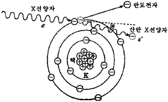
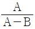
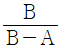
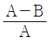
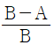
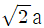
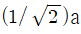
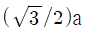

방사선비파괴검사기사(구) (2010-09-05 기출문제)
1과목: 방사선투과시험원리
1. 그림은 X선과 물질과의 상호작용을 나타낸 것이다. 어떤 작용을 설명하기 위한 그림인가? (단, 그림에서 ε은 입사 X선의 에너지이고, ε‘은 산란 X선의 에너지이다.)

- 광전효과
- 전자쌍생성
- 톰슨산란
- 콤프턴 효과
(정답률: 알수없음)

2. A시의 방사선안전관리자는 Ir-192를 50Ci에 구입하여 5Ci에 폐기하고자 한다. Ir-192의 폐기일은 구입 후 약 몇 일째로 계획하면 되겠는가?
- 225일
- 250일
- 275일
- 300일
(정답률: 알수없음)
3. 식별한계 콘트라스트에 관한 설명으로 옳은 것은?
- 방사선투과사진의 감도를 말한다.
- 감광속도가 빠른 필름일수록 커진다.
- 피사체콘트라스트와 필름콘트라스트를 합한 것이다.
- 식별한계 콘트라스트가 투과사진 콘트라스트보다 크면 결함이 식별되지 않는다.
(정답률: 알수없음)
4. 열형광선량계(TLD)에 관한 설명으로 옳지 않은 것은?
- 감도가 좋고 측정범위가 넓다.
- 소자를 반복하여 사용할 수 있다.
- 방향의존성이 있으며 에너지 의존성이 크다.
- 판독장치가 필요치 않으며 기록 보존이 쉽다.
(정답률: 알수없음)
5. 다음 중 중성자선원으로 사용하기에 가장 적절한 방사성동위원소는?
- Cf-252
- Cs-137
- Gd-153
- Yb-169
(정답률: 알수없음)
6. 동일한 정격전압과 전류로 고정되어 있는 2대의 X선 장비가 가동되고 있을 때 발생할 수 있는 현상으로 가장 적절한 것은?
- 방사선의 강도 및 선질은 완전히 동일하다.
- 방사선의 강도나 선질이 다르게 발생할 수 있다.
- 방사선의 강도는 동일하지만 선질은 다르게 발생한다.
- 방사선의 선질은 동일하지만 강도는 다르게 발생한다.
(정답률: 알수없음)
7. 비파괴검사법 중 검사 속도가 빠르고 자동화가 쉬우며, 전도체의 표면 결함 검출에 감도가 우수한 것은?
- 누설검사
- 초음파탐상시험
- 방사선투과시험
- 와전류탐상시험
(정답률: 알수없음)
8. 초음파탐상시험에 사용되는 초음파의 일종으로 고체 액체 및 기체 모두에 존재하며 진동방향이 진행방향과 평행한 초음파는?
- 종파
- 횡파
- 판파
- 표면파
(정답률: 알수없음)
9. 재료 내부의 동적거동을 비파괴적으로 평가하는 시험은?
- 방사선투과시험
- 자분탐상시험
- 와전류탐상시험
- 음향방출시험
(정답률: 알수없음)
10. 제품을 설계할 때 개념(conceptual)설계, 예비설계, 배설계(lay out), 상세설계의 단계로 이루어진다고 한다. 이 중 비파괴검사의 적용성을 고려해야 할 단계는?
- 개념설계
- 예비설계
- 배치설계
- 상세설계
(정답률: 알수없음)
11. 침투탐상시험에서 침투액의 정성(Viscosity)은 침투액의 어떠한 성능에 가장 큰 영향을 미치는가?
- 침투력
- 세척성
- 형광성
- 침투속도
(정답률: 알수없음)
12. 다음 중 비파괴시험적인 요소를 포함하고 있는 것은?
- 인장시험
- 굽힘시험
- 충격시험
- 경도시험
(정답률: 알수없음)
13. 미세한 표면 흠을 발견하기에 가장 우수한 침투탐상시험법은?
- 수세성 염색침투탐상시험법
- 후유화성 염색침투탐상시험법
- 후유화성 형광침투탐상시험법
- 용제제거성 형광침투탐상시험법
(정답률: 알수없음)
14. 철강재를 용접하여 일정시간 경과 후 표면 및 표면직하의 결함 검출에 경제적이고 손쉬운 비파괴검사법은?
- 음향방출시험
- 초음파탐상시험
- 자분탐상시험
- 방사선투과시험
(정답률: 알수없음)
15. 시험부의 양쪽 면에 접근 가능해야만 검사를 할 수 있는 비파괴검사법은?
- 자분탐상검사
- 침투탐상검사
- 초음파탐상검사
- 방사선투과검사
(정답률: 알수없음)
16. 중성자투과시험에 이용되는 중성자빔의 발생원과 거리가 먼 것은?
- 원자로
- 입자가속기
- X선 발생기
- 방사성 동위원소
(정답률: 알수없음)
17. 열처리 공정이 끝난 항공우주용 비자성 재료의 표면균열검출을 위하여 검사 속도가 빠르고 비용이 저렴하여 널리 활용되고 있는 비파괴검사법은?
- 자분탐상시험
- 초음파탐상시험
- 침투탐상시험
- 방사선투과시험
(정답률: 알수없음)
18. 단조품의 내부결함 검출에 가장 적합한 비파괴검사법은?
- 자분탐상시험법
- 초음파탐상시험법
- 침투탐상시험법
- 와전류탐상시험법
(정답률: 알수없음)
19. 방사선 투과사진상의 기하학적 불선명도에 영향을 주는 인자와 거리가 먼 것은?
- 선원의 크기
- 시험체의 밀도
- 시험체와 필름간 거리
- 선원과 시험체간 거리
(정답률: 알수없음)
20. 방사선투과시험에서 일반적으로 조사선량을 측정하기 위하여 사용되는 원리로써 기체에 방사선이 닿으면 전기적으로 중성이던 기체의 원자 또는 분자가 전자와 양이온으로 분리되는 작용을 무엇이라 하는가?
- 전리작용
- 형광작용
- 사진작용
- 조사작용
(정답률: 알수없음)
2과목: 방사선투과검사
21. 다른 조건은 변하지 않고 X선관의 관전압을 상승시키면 파장과 투과력은 어떻게 변화하겠는가?
- 파장은 짧아지고 투과력은 저하된다.
- 파장은 짧아지고 투과력은 향상된다.
- 파장은 길어지고 투과력은 저하된다.
- 파장은 길어지고 투과력은 향상된다.
(정답률: 알수없음)
22. 현상액의 활성도는 필름의 특성 중 어느 것에 가장 크게 영향을 미치는가?
- 입상성
- 기하학적 조건
- 고유 불선명도
- 피사체 콘트라스트
(정답률: 알수없음)
23. 어떤 시험체를 초점-필름간 거리(SFD) 60cm, 관전압 200kVp, 관전류 5mA, 노출시간 30초에서 만족할만한 사진을 얻었다. 75일이 지난 후, 같은 상질을 얻기 위하여 다른 인자는 변하지 않고 거리(SFD)만을 120cm로 늘인 경우 노출시간은?
- 1분
- 2분
- 4분
- 8분
(정답률: 알수없음)
24. 방사선 투과사진의 등급분류를 행하기 전에 투과사진이 구비하여야 할 조건이 아닌 것은?
- 결함의 유무
- 투과도계 식별도
- 사진의 농도
- 계조계의 농도차
(정답률: 알수없음)
25. X선관에서 소비되는 전력과 X선 출력과의 비로 표현될 수 있는 X선의 발생효율은 무엇에 비례하는가?
- 관전압
- 표적재료의 질량
- 관전류
- 표적재료의 원자번호
(정답률: 알수없음)
26. 동위원소의 단위질량당 방사능의 세기를 비방사능(specific activity)이라고 하는데, Ir-192의 비방사능은 약 얼마인가?
- 1200Ci/g
- 6300Ci/g
- 10000Ci/g
- 20000Ci/g
(정답률: 알수없음)
27. 1 MeV의 γ선을 콘크리트로 차폐하여 1/2, 1/10, 1/100로 줄이기 위해서는 콘크리트의 두께를 각각 약 얼마로 하여야 하는가? (단, 1MeV γ선에 대한 질량흡수계수는 0.0635cm2/g, 콘크리트의 밀도는 2.4g/cm3이다.)
- 5cm, 15cm, 30cm
- 10cm, 15cm, 20cm
- 10cm, 20cm, 30cm
- 15cm, 20cm, 25cm
(정답률: 알수없음)
28. 낮은 관전압의 X선관 창(X-ray tube windows) 출구의 재질로 베릴륨(Be)을 사용하는 주된 이유는?
- 밀도가 크기 때문에
- 용융점이 높기 때문에
- 전도율이 낮기 때문에
- 원자번호가 낮기 때문에
(정답률: 알수없음)
29. 필름의 감광도와 콘트라스트에 크게 영향을 주며, 현상 및 정착이 알맞은 시간 내에 이루어질 수 있도록 해주는 역할을 하는 것은?
- 정지액(stopper)
- 현상제(developer)
- 셀룰로오즈(cellulose)
- 감광유제(silver bromide)
(정답률: 알수없음)
30. X선관에서 초점(Focal spot)의 크기가 가능한 한 작아야 하는 이유는?
- 투과력을 증대시키기 위해
- 콘트라스트를 줄이기 위해
- 영상의 섬세도를 증대시키기 위해
- 필름의 흑화도를 증대시키기 위해
(정답률: 알수없음)
31. 방사선 투과 사진상을 기록하는 매체로서 필름 대신 사용하는 이메이질 플레이트(Imaging Platr. IP)가 있다. IP의 특성을 필름과 비교하여 설명한 것으로 옳지 않은 것은?
- 필름에 비해 감도가 높다.
- 필름에 비해 허용도(latitude)가 넓다.
- 필름에 비해 노출시간의 단축이 가능하다.
- 필름에 비해 약간 더 어두운 암실이 필요하다.
(정답률: 알수없음)
32. 정착제의 성분 중 현상되지 않은 AgBr의 제거 목적으로 사용되는 것은?
- 아세트산(Acetic Acid)
- 아황산나트륨(Sodium Sulfate)
- 염화알루미늄(Aluminium Chloride)
- 티오황산암모늄(Ammonium Thiosulfate)
(정답률: 알수없음)
33. 방사선 투과사진의 판독에 관한 설명으로 옳지 않은 것은?
- 투과사진의 투과도계 식별도는 농도와 관계가 있다.
- 투과사진을 관찰할 경우 직사광선이 드는 장소가 좋다.
- 투과사진의 농도가 높은 경우 필름판독기는 밝은 것이 좋다.
- 투과사진의 농도가 높을 경우 장소응 약 300룩스의 실내보다 암실이 좋다.
(정답률: 알수없음)
34. 재질과 두께를 고려해 판독 가능한 농도의 방사선 사진을 얻기 위해 사용되는 도표는?
- 노출도표
- 마우러선도
- H&D 곡선
- 필름 특성곡선
(정답률: 알수없음)
35. 계조계에 근접한 모재부분의 농도를 A, 계조계의 중앙부분의 농도를 B라 할 때 계조계의 값은?




(정답률: 알수없음)
36. 방사선 투과검사시 투과사진에서 볼 수 있는 인공결함(Artifact) 중 노출 후에 필름이 구겨졌을 때 현상처리한 필름에 나타나는 결함의 형상은?
- 뿌연 안개 모양
- 불규칙한 줄무늬
- 검은 반점과 날카로운 검은 선
- 주위보다 짙은 농도의 초승달 형태
(정답률: 알수없음)
37. 방사선 투과검사의 현상처리에 관한 설명으로 옳은 것은?
- 정착액의 온도는 일반적으로 18~24℃ 정도를 유지하는 것이 바람직하다.
- 정지액은 일반적으로 5~10℃의 차가운 온도를 유지하고 현상액과 중화하여 사용하여야 한다.
- 암실의 온도는 일반적으로 30℃ 이상을 유지하여야 하며, 상대습도는 25% 이하로 건조해야 좋다.
- 정착한 후 흐르는 물에 예비수세시 아황산소다의 2% 용액에 침지하면 수세시간을 충분히 연장할 수 있다.
(정답률: 알수없음)
38. 다음 방사선 측정기기 중 방사선에 의한 가스의 전리를 측정하는 방식이 아닌 것은?
- 전리함(Ionization Chamber)
- GM 계수관(Geiger Muller Counter)
- 비례계수관(Proportional Counter)
- 반도체검출기(Semiconductor Detector)
(정답률: 알수없음)
39. 220kV, X선으로 20mm 동판을 촬영하려면 몇 mm 철판을 촬영할 때와 노출시간이 같아야 하는가? (단, 구리의 X선 등가계수는 1.4이다.)
- 16mm
- 24mm
- 28mm
- 32mm
(정답률: 알수없음)
40. 다음 중 방사선 투과검사시 산란선의 영향을 줄이기 위해 사용하는 보조재가 아닌 것은?
- 마스크(Mask)
- 콜리메니터(Collimator)
- 연박스크린(Lead foil screen)
- 격자 다이아프램(Grid diaphragm)
(정답률: 알수없음)
3과목: 방사선안전관리,관련규격및컴퓨터활용
41. 9mSv/h씩 조사되는 방사선장에서 작업하여야 하는 작업자가 3mSv/h 까지만 피폭이 허용된다면 이 작업장에서 작업자는 최대 얼마나 작업할 수 있는가?
- 20분
- 30분
- 40분
- 60분
(정답률: 알수없음)
42. 다음 중 원자력법 시행규칙에 의해 반드시 방사선량을 측정하여야 하는 장소에 해당되지 않는 것은?
- 배수구
- 사용시설
- 저장시설
- 방사선관리구역
(정답률: 알수없음)
43. α선을 방출하는 방사성물질에 대하여 원자력법에서 허용하는 최대 표면오염도는 얼마인가?
- 0.04 kBg/m2
- 0.4 kBg/m2
- 4 kBg/m2
- 40 kBg/m2
(정답률: 알수없음)
44. 보일러 및 압력용기에 대한 방사선 투과검사(ASME Sec. Art.2)에 따라 구형 기기의 중앙에 선원을 놓고 한 번의 노출 촬영하는 경우 하나 또는 그 이상의 필름홀더를 사용하기전 원주를 촬영하고자 한다. 이 때 필요한 최소 투과도계수는 몇 개인가?
- 1개
- 2개
- 3개
- 4개
(정답률: 알수없음)
45. 주강품의 방사선 투과시험(KS D 0227)에서 주강품이 수지상 수축과 선형 수축이 혼재하고 있을 때, 결함 폭 치수는 얼마로 하는가?
- 폭의 3배
- 길이의 3배
- 폭의 1/3
- 길이의 1/3
(정답률: 알수없음)
46. 강 용접 이음부의 방사선 투과시험 방법(KS D 0845)에 의해 투과사진의 결함을 분류할 때 다음 중 결함의 종류에 해당되지 않는 것은?
- 갈라짐
- 언더컷
- 용입 불량
- 둥근 블로홀
(정답률: 알수없음)
47. 원자력법에서 일반인에 대한 연간 유효선량한도를 얼마로 정하고 있는가?
- 1mSv
- 5mSv
- 12mSv
- 100mSv
(정답률: 알수없음)
48. 강 용접 이음부의 방사선 투과시험 방법(KS D 0845)에 따라 모재두께 24mm인 검사체의 제2종의 결함분류가 2류인 경우 최대 허용될 수 있는 가늘고 긴 슬래그 혼입의 결함길이는?
- 6mm
- 8mm
- 12mm
- 16mm
(정답률: 알수없음)
49. 보일러 및 압력용기에 대한 방사선 투과검사(ASME Sec. Art.2)에 따라 28mm(1.1인치) 두께의 시험체를 촬영시 필름측에 부착할 유공형 투과도계의 식별번호는?
- 10
- 20
- 25
- 30
(정답률: 알수없음)
50. 부피가 10cm3이며, 질량이 50g인 어떤 물질에 100erg의 방사선이 흡수되었다면 이 물질의 흡수선량은 몇 red인가?
- 0.01red
- 0.02red
- 10red
- 20red
(정답률: 알수없음)
51. 강 용접 이음부의 방사선 투과시험 방법(KS D 0845)에 의해 4mm 강판의 맞대기 용접부에서 A급 상질을 요구하는 경우 계조계의 값은?
- 0.062 이상
- 0.081 이상
- 0.10 이상
- 0.15 이상
(정답률: 알수없음)
52. 보일러 및 압력용기에 대한 방사선 투과검사(ASME Sec. Art.2)에서 320kV이하의 X선 발생장치의 초점 크기를 측정하는 방법은?
- 핀홀법
- 단벽촬영법
- 섹션법
- 이중벽촬영법
(정답률: 알수없음)
53. 야외작업현장에서 방사선 투과검사를 하기 전 주변지역에 방사선 구역을 설정하는 방법으로 가장 적절한 것은?
- 알람미터를 사용하여 알람이 적게 울리는 지역에 로프를 설치한다.
- 감마선 측정용 서베이미터를 사용하여 규정선량 이하인 지역에 로프를 설치한다.
- 포켓도시미터를 사용하여 시간당 집적선량이 0.75mR/h 이하인 구역에 로프를 설치한다.
- 선원의 세기는 거리의 역제곱에 비례한다는 법칙을 이용, 계산에 의해 거리를 산출하여 로프를 설치한다.
(정답률: 알수없음)
54. 강 용접 이음부의 방사선 투과시험 방법(KS D 0845)에서 규정하고 있는 강 용접부 시험에 사용할 수 있는 계조계의 재료는?
- 연신신주
- 압연강재
- 압연동재
- 연신알루미늄
(정답률: 알수없음)
55. 보일러 및 압력용기에 대한 방사선 투과검사(ASME Sec. Art.2)에 따라 X선으로 촬영을 하여 필름 1장으로 관찰할 경우 요구되는 방사선 투과사진의 농도 범위로 옳은 것은?
- 최소 1.3 이상 최대 3.5 이하
- 최소 1.5 이상 최대 3.5 이하
- 최소 1.8 이상 최대 4.0 이하
- 최소 2.0 이상 최대 4.0 이하
(정답률: 알수없음)
56. 윈도우 운영체제에서 디스크 조각 모음을 할 경우 최상의 결과를 얻기 위해 우선적으로 해야 할 조치는?
- 윈도우를 종료하고 새로 부팅한다.
- 필요 없는 파일들을 미리 삭제하고 휴지통도 비운다.
- CD-ROM 드라이브에서 CD-ROM을 꺼낸다.
- 하드 디스크의 임시 폴더에 데이터 파일의 백업본을 만들어 놓는다.
(정답률: 알수없음)
57. 정보검색을 할 때의 주의 사항으로 틀린 것은?
- 검색엔진을 사용할 경우 각각의 검색 엔진에서 사용할 수 있는 기능들에 대한 도움ㅁ발을 알아 두면 편리하다.
- 한 검색엔진을 이용하여 정보검색을 할 때 원하는 검색결과가 나오지 않았다고 하면, 다른 검색엔진을 사용해도 원하는 결과를 얻기 어려우므로 다른 방법을 모색한다.
- 키워드 선택이 중요하다. 키워드가 짧으면 원하는 결과를 찾을 수 없는 경우가 많으므로 키워드는 구체적으로 만드는 것이 좋은 방법이다.
- 검색엔진마다 검색 연산자가 약간씩 다르므로 이를 정확히 숙지한 후 키워드와 검색 연산자를 조합하여 작성한 검색식을 정보 검색에 이용한다.
(정답률: 알수없음)
58. 컴퓨터 통신서비스 중 세계 어느 지역에서나 음성 전화, 무선호출, 전자 우편 등의 서비스를 제공할 수 있는 차세대 이동 통신용 위성 서비스는?
- IMT-200
- WAP
- Blue tooth
- IrDA
(정답률: 알수없음)
59. 사용자가 방문했던 내용을 담고 있는 캐시 서버로서 방화벽의 기능까지 지원하는 것은?
- 웹 서버
- TCP/IP
- 클라이언트 서버
- 프록시 서버
(정답률: 알수없음)
60. 컴퓨터 네트워크를 구성하기 위한 연결 장비가 아닌 것은?
- 게이트웨이
- 라우터
- 허브
- 브라우저
(정답률: 알수없음)
4과목: 금속재료학
61. 다음의 열처리 방법 중 최종 미세조직이 베이나이트인 것은?
- Martempering
- Austempering
- Ausforming
- Sperodiing
(정답률: 알수없음)
62. 재료가 영구히 파괴되지 않는 응력 중에서 최대의 것을 무엇이라고 하는가?
- 크리프 한도
- 항복 응력
- 에릭센값
- 피로 한도
(정답률: 알수없음)
63. 주철의 종류와 제조 방법을 설명한 것 중 틀린 것은?
- CV 주철은 Fe-Si, Fe-Mn으로 접종처리 하여 제조한다.
- 칠드주철은 주형에 냉금을 삽입하여 주물표면을 급랭시켜 제조한다.
- 구상흑연주철은 전기로에서 용해하여 주형 주입 후 Fe, Si, K를 첨가하여 제조한다.
- 미하나이트주철은 Ca-Si, Fe-Si 등으로 접종하여 제조한다.
(정답률: 알수없음)
64. 분말을 캡슐에 넣어 진공 밀폐한 것을 고압용기에 넣어 고온고압의 불활성가스에서 열간 전방향으로 압력을 가하여 압축과 소결을 동시에 하는 성형법은?
- 소결단조법
- 사출성형법
- 분무성형법
- 열간정수압성형법
(정답률: 알수없음)
65. 다음 중 탄소강에서 펄라이트(pearlite)는 무엇의 혼합조직인가?
- 오스테나이트+시멘타이트
- 페라이트+오스테나이트
- 페라이트+시멘타이트
- 레데뷰라이트+오스테나이트
(정답률: 알수없음)
66. 비정질합금의 특성에 관한 설명으로 틀린 것은?
- 열에 강하여 내열부품으로 사용된다.
- 균질한 재료이고 결정이방성이 없다.
- 전기저항이 크고, 그 온도 의존성은 작다.
- 강도와 연성이 크나 가공경화는 일으키지 않는다.
(정답률: 알수없음)
67. 고강도 알루미늄 합금인 두랄루민에 강도를 더욱 증가시킨 초초두랄루민(extra super duralumin, ESD)은 두랄루민에 어떤 원소를 추가하여 제작 되는가?
- C
- W
- Si
- Zn
(정답률: 알수없음)
68. 온도변화에 따라 열팽창계수, 탄성계수 등의 변화가 적고 고급 정밀기계 부품, 전자기재료 등에 사용되는 Ni-Fe 합금이 아닌 것은?
- 모넬메탈(Monel metal)
- 엘린바(Elinbar)
- 슈퍼인바(Superinvar)
- 플라티나이트(Platinite)
(정답률: 알수없음)
69. 강의 담금질(quenching)에 대한 설명 중에서 틀린 것은?
- 위험구역은 빨리 냉각한다.
- 이공석강의 가열 온도는 A3+50℃이다.
- 임계구역을 통과한 강의 조직은 마텐자이트이다.
- 공구강의 담금질시 가열온도는 오스테나이트화 온도(TA)이다.
(정답률: 알수없음)
70. 마텐자이트형 변태의 일반적인 특징이 아닌 것은?
- 전단변형 변태
- 무확산 변태
- 정적 재결정 변태
- 협동적 원자운동에 의한 변태
(정답률: 알수없음)
71. 탄소강에서 참가원소 영향을 짝지은 것 중 틀린 것은?
- P : 입자의 조대화를 촉진한다.
- Mn : 고온에서 주조성을 저하시킨다.
- Si : 페라이트 중에 고용되어 경도를 향상시킨다.
- Cu : 고탄소강에서 부식에 대한 저항성을 증가시킨다.
(정답률: 알수없음)
72. 다음 중 흑연 도가니에서 용해할 수 없는 금속은?
- Al
- Fe
- Cu
- Zn
(정답률: 알수없음)
73. 고망간강(high manganese steel)에 대한 설명으로 틀린 것은?
- 기지는 오스테나이트(austenite)조직을 갖는다.
- 열처리는 수인법(water toughning)을 이용한다.
- 열전도성이 좋고 팽창계수가 작아 열변형을 일으키지 않는다.
- 항복점은 낮으나 인장강도는 높게 되어 파괴에 대해 높은 인성을 나타낸다.
(정답률: 알수없음)
74. BCC 결정 구조에서 격자 정수를 a라 할 때 근접원자간 거리는?

- 2a


(정답률: 알수없음)
75. 마그네슘 합금의 기호 중 ASTM에서 나타내는 주요배합 금속기호에 대한 설명으로 틀린 것은?
- A는 Al 금속의 기호이다.
- K는 Ag 금속의 기호이다.
- Z는 Zn 금속의 기호이다.
- E는 희토류 금속의 기호이다.
(정답률: 알수없음)
76. 조밀육방격자(HCP) 금속에 대한 설명으로 틀린 것은?
- HCP 금속에는 Cd, Mg 등이 있다.
- HCP 결정구조의 이상적인 측비(c/a)는 1.633이다.
- 순수 Ti은 상온에서 심한 균열을 발생시키므로 두께를 20% 이하로만 냉간 가공할 수 있다.
- HCP Ti의 연성이 비교적 높은 것은 Ti 결정격자에 작용될 수 있는 슬립계가 많고 쌍정이 가능하기 때문이다.
(정답률: 알수없음)
77. 화폐용으로 사용되는 스터링 실버(sterling silver) 귀금속 합금의 조성으로 옳은 것은?
- Ag-10% Au합금
- Ag-7.5% Au합금
- Ag-7.5% Cu합금
- Ag-10% Cu합금
(정답률: 알수없음)
78. 블스아이(bull' s eye)조직을 갖는 주철은?
- 구상흑연주철
- 백심가단주철
- 흑심가단주철
- 합금주철
(정답률: 알수없음)
79. 형상기억합금에 대한 설명이 틀린 것은?
- 실용합금으로는 Ni-Ti계가 있다.
- 형상기억효과는 일방향성(one way)의 현상이다.
- 형상기억합금은 제트 전투기의 파이프 이음쇄(pope fitting)에 이용 된다.
- 형상기억합금이 초탄성합금과의 차이점은 변형 후에 열을 가하면 원형으로 되돌아가지 않는 것이다.
(정답률: 알수없음)
80. 망간동에 관한 설명 중 틀린 것은?
- 망간동 전기저항이 높아 저항재료로 쓰인다.
- 300℃ 이상에서도 고온강도가 유지되고, Cu에 Mn이 고용한도 이상으로 첨가하면 연성이 우수해진다.
- 망간동은 고강도 황동에서 탈산제로 사용된 Mn이 소량 잔류한 것이다.
- Cu-Mn에 Ni을 첨가한 Manganin은 상온에서 온도계수가 매우 작다.
(정답률: 알수없음)
5과목: 용접일반
81. 산소가스에 대한 설명으로 틀린 것은?
- 성질은 무색, 무취, 무미의 기체이다.
- 공기보다 약간 무겁다.
- 아세틸렌가스와 화합하여 아세틸렌 연소를 도와주는 역할을 한다.
- 산소 자체는 잘 타지 않으므로 가연성 가스이다.
(정답률: 알수없음)
82. 수중절단에 가장 많이 사용하는 가스는?
- 수소
- 아르곤
- 헬륨
- 탄산가스
(정답률: 알수없음)
83. 피복 아크 용접에서 언더컷의 발생 원인에 해당되지 않는 것은?
- 아크 길이가 너무 길 때
- 용접속도가 적당하지 않을 때
- 부적당한 용접봉을 사용할 때
- 슬래그의 유동성이 좋고 냉각하기 쉬울 때
(정답률: 알수없음)
84. 가스용접에서 불변압식(A형) 팁번호 1번 사용시 용접 가능한 판 두께로 가장 적합한 것은?
- 1mm
- 4mm
- 10mm
- 15mm
(정답률: 알수없음)
85. 연강용 피복 아크 용접봉의 기호가 E4303인 것은?
- 저수소계 용접봉
- 일루미나이트계 용접봉
- 철분저수소계 용접봉
- 라임티타니아계 용접봉
(정답률: 알수없음)
86. 용접부의 잔류응력을 감소시키기 위한 대책으로 잘못된 것은?
- 용접부 용착금속 량을 감소시킨다.
- 개선 각과 루트 간격을 되도록 크게 한다.
- 수축 량이 큰 곳부터 먼저 용접한다.
- 용접 후 서냉 한다.
(정답률: 알수없음)
87. 용접 길이를 짧게 나누어 간격을 두면서 용접하는 방법으로 피용접물 전체에 변형이 적게 발생하도록 하는 용착법은?
- 대칭법
- 후퇴법
- 전진법
- 비석법
(정답률: 알수없음)
88. 교류 아크 용접기의 부속장치 중 핫 스타트 장치의 특성 설명으로 틀린 것은?
- 비드 모양을 개선한다.
- 아크 발생을 어렵게 한다.
- 가공(blow hole)을 방지한다.
- 아크발생 초기의 용입을 양호하게 한다.
(정답률: 알수없음)
89. 납땜 재료 중 연납땜 재료로 사용할 수 있는 것은?
- 카드뮴-아연납
- 황동납
- 은납
- 알루미늄납
(정답률: 알수없음)
90. 일면 충돌용접이라고도 하며 극히 짧은 지름의 용접물 접합에 사용되고 전원은 축전된 직류를 사용하는 용접법은?
- 만능 심 용접
- 업셋 용접
- 퍼커션 용접
- 플래시 버트 용접
(정답률: 알수없음)
91. 저수소계 용접봉에 관한 설명 중 틀린 것은?
- 피복제로 석회석(CaCO3, 형석(CaF2)을 주성분으로 사용한 용접봉이다.
- 비드가 안정하고 파형도 고우며, 기공의 발생이 적어 아크 길이를 길게 하여 용접하는 것이 좋다.
- 강력한 탈산작용 때문에 산소량이 적으며, 용착 금속의 인성(toughness) 및 기계적 성질이 좋다.
- 피복제는 습기를 흡습하기 쉽기 때문에 사용하기 전에 300~350℃ 정도로 1~2시간 동안 건조시켜 사용한다.
(정답률: 알수없음)
92. TIG 용접에 사용되는 비소모성 전극의 조건으로 틀린 것은?
- 고 용융점의 금속
- 전자 방출이 잘되는 금속
- 전기 저항률이 많은 금속
- 열 전도성이 좋은 금속
(정답률: 알수없음)
93. 미그(MIG)용접의 장점 설명으로 틀린 것은?
- 수동 피복 아크 용접에 비해 용착효율이 높다.
- 각종 금속 용접에 다양하게 적용할 수 있어 용융범위가 넓다.
- 티그(TIG) 용접에 비해 용융속도가 빠르다.
- 보호가스의 가격이 저렴하여 연강 용접에 적당하다.
(정답률: 알수없음)
94. 용접기의 1차 압력이 20kVA 이고 전원 전압이 200V일 때, 용접기 1차측 안전스위치 퓨즈 용량으로 가장 적합한 것은?
- 100A
- 10A
- 5A
- 0.1SA
(정답률: 알수없음)
95. 가스 압접(pressure gas welding)의 특징이 아닌 것은?
- 이음부에 탈탄층이 생기기 쉽다.
- 용접시간이 빠르다.
- 용접봉이나 용제가 필요 없다.
- 장치가 간단하여 설비비, 보수비가 저렴하다.
(정답률: 알수없음)
96. 150kgf/cm2의 압력으로 대기압 하에서 6,000ℓ가 충전된 산소를 압력이 100kgf/cm2 될 때까지 사용하였다면 산소사용량은?
- 1200ℓ
- 1500ℓ
- 1800ℓ
- 2000ℓ
(정답률: 알수없음)
97. 피복 아크 용접법에 대한 설명 중 틀린 것은?
- 교류 혹은 직류전원을 모두 사용할 수 있다.
- 전자세 용접이 가능하다.
- 옥외 용접이 가능하다.
- 보호가스가 필요하다.
(정답률: 알수없음)
98. 아크쏠림(arc blow)방지 방법으로 가장 적합한 것은?
- 직류 역극성으로 극성을 선택한다.
- 접지점을 될 수 있는 대로 용접부로부터 멀리한다.
- 아크 길이를 길게하여 용접한다.
- 직류 정극성으로 극성을 선택한다.
(정답률: 알수없음)
99. 모재 및 용접부의 연성뿐만 아니라 기공, 슬래그 섞임선상조직 등 결함의 유무를 조사하기 위한 시험은?
- 굽힘시험
- 인장시험
- 충격시험
- 경도시험
(정답률: 알수없음)
100. AW 300의 아크 용접기로 220A의 용접전류를 사용하여 10시간 용접했다. 이 경우 허용 사용율은 약 몇 %인가? (단, 용접기의 정격 사용율은 45%이다.)
- 83.7
- 52.6
- 61.4
- 45.8
(정답률: 알수없음)